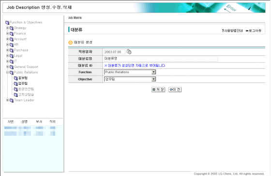

|
개요 | |
 |
개요 | |
| 기존 수행 중인 Job들과 새로 생성한 Job들에 대한 새로운 대분류를 생성하도록 구성된 화면임. | ||
 |
화면사용법 및 유의사항 | |
| <그림 1. 대분류 생성 화면> | ||
|  | ||
| 1. 초기화면에서 대분류 생성 Button을 Click하여 이동한다. | ||
| 2. 적용일자는 Default로 현재일자가 Display이 되며, Calendar 검색으로 원하는 적용일자를 선택할 수 | ||
| 있다. | ||
| 3. 새롭게 생성할 대분류명을 Text로 입력한다. | ||
| 4. 생성할 대분류가 속하는 Function과 Objective를 각 List를 Click하여 선택한다. 이때 조회권한이 있는 | ||
| Function과 Objective 만 나타난다. | ||
| 5. 화면 하단의 저장 Button을 Click하면 데이터가 생성되고, "Job Description 조회.수정.생성"의 Job Matrix | ||
| 화면으로 자동으로 이동한다. | ||